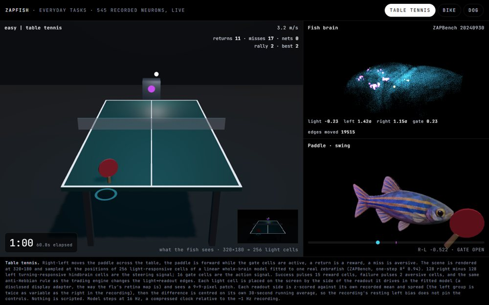
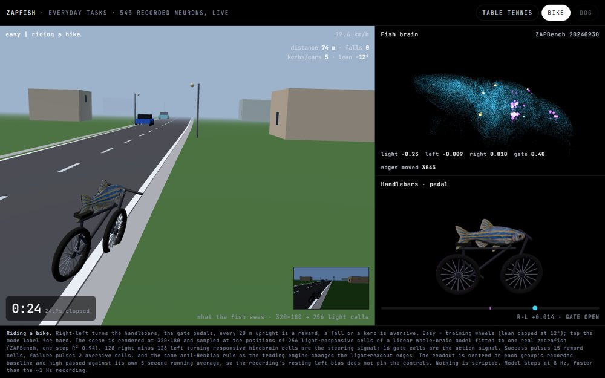
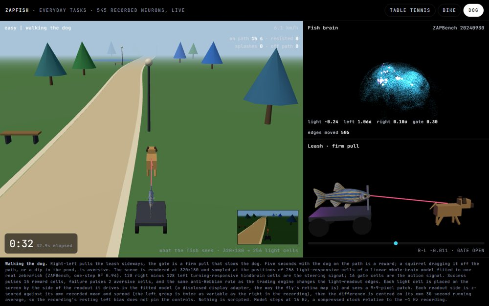
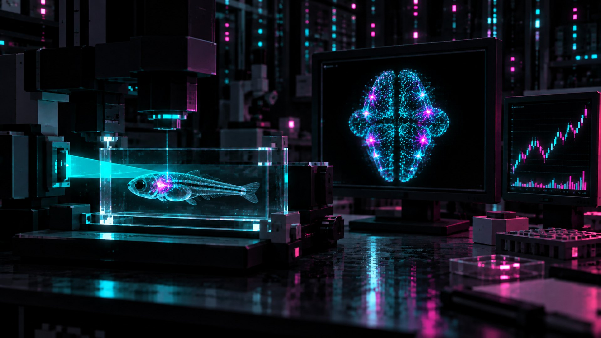
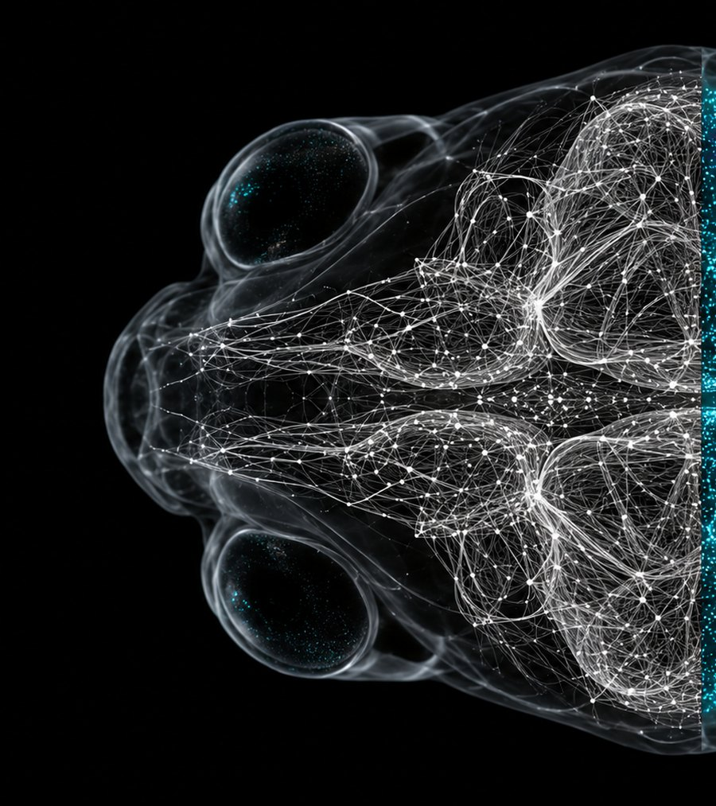

01 — Everyday tasks · live
A fish brain, holding things.
Watch it play. 545 recorded cells, the same readout and the same learning rule can hold a paddle, a pair of handlebars or a leash. Each page runs the model live in your browser at 16 Hz; nothing is scripted, and the scoreboard is honest.

Table tennis
Right−left moves the paddle, the gate cells hold it forward. About one return in three.

Riding a bike
Handlebars from the readout, pedalling from the gate. Training wheels on easy.

Walking the dog
Leash pulls from the readout, a firm pull from the gate. Squirrels happen.

02 — Decide · Experiment 01
Can it trade?
One downstream experiment, borrowed from STONKFLY's fruit fly. A price chart is rendered to pixels and shown to the model's light-responsive cells. A fixed readout compares the right and left hindbrain cells that responded to turning in the recording. Right above left proposes buy, left above right proposes sell, silence holds. A guard checks limits and can only say no. Paper mode. No orders leave the machine.
Latest paper observation from the ZAPFISH engine. The readout has shown a persistent sell-side bias on every run so far, which the guard vetoes because the account holds nothing to sell. As STONKFLY warns of its fly: a persistent turning-like bias becomes a persistent order bias. Do not read it as market insight. 56,909 of 64,748 plastic light→readout edges had moved after two observations.
WE CLAIM
- The positions and activity on this page are from one real zebrafish, ZAPBench release 20240930. Every dot maps to a neuron ID in that dataset.
- The prediction is a real fitted model with a declared method and a held-out test. Its numbers are reproducible from the public files.
- The trading readout is fixed, logged and reviewable. Nothing overrides its proposal with a different action.
WE DO NOT CLAIM
- Use of the Fire&Wire connectome. It is being proofread; access is by application.
- Profitable learning. A rising market makes any buyer look smart; no held-out replay has shown an edge.
- That the fish sees, wants, or feels anything here. Reward and loss are engineered inputs.
03 — Wire
The first complete vertebrate wiring diagram.
Fish Fire&Wire is Janelia's whole-brain connectome of a larval zebrafish: roughly 140,000 neurons, every synapse traced, sensory structures and motor outputs included. A draft was completed in 2026 and is still being proofread. Early snapshots are released by application, with attribution and publication conditions.
We do not have it yet. Until we do, nothing here claims to run on the wiring. The left half of the picture above is what that map will look like; the right half is what we can already show you.

04 — Fire · live replay
Every dot is a recorded cell.
This is the ZAPBench fish. All 71,721 neuron positions come from the release's segmentation. 4,096 of them, spread across the brain, light up with their own recorded calcium signal as the fish moves through the nine stimulus conditions of the experiment. Drag to turn it.
FRAME — / 7879
ACTIVE — OF 4096
Positions: segmentation/dataframe_centroids.json. Activity: volumes/20240930/traces, 64 evenly spaced frames per condition, each cell scaled to its own 5th–99.5th percentile. Replay runs faster than the roughly one-volume-per-second recording. Cells we did not download stay dim.
05 — Predict
Google made a benchmark to predict this brain.
ZAPBench asks a simple question: given the recent past of every neuron, can a model forecast the next 32 frames? We fitted our own linear whole-brain model to the recording (2,048 cells, three frames of history, one-step R² of 0.92) and let it run open-loop on the condition it never saw during training.
Our model, not a leaderboard entry. Trained on eight conditions, shown on the held-out "taxis" condition. Held-out means the model never saw these frames.
06 — Cognition
Nine things the fish was shown.
The recording is not idle activity. The fish sat in a virtual environment and saw nine kinds of stimulus in sequence, as labelled in the release. Pick one and the brain above jumps to it.